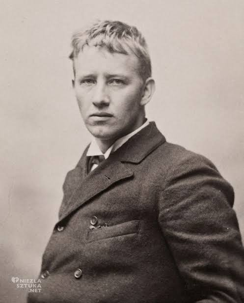

Edvard Munch (1863–1944): É o artista norueguês mais internacionalmente famoso. Pioneiro do Expressionismo, explorou temas de angústia existencial, solidão e a psique humana. Sua obra-prima "O Grito" (Skrik) é um dos ícones máximos da arte mundial. Em Oslo, o Munch Museum abriga milhares de suas obras.

Gustav Vigeland (1869–1943): Escultor de renome cujas obras em bronze e granito compõem o famoso Parque Vigeland (Vigelandsparken) em Oslo, que reúne mais de 200 esculturas retratando o ciclo da vida humana.

Alfredo Andersen (1860–1935): Embora nascido na Noruega, mudou-se para o Brasil e tornou-se conhecido historicamente como o "pai da pintura paranaense", unindo sua formação técnica europeia à sensibilidade brasileira.